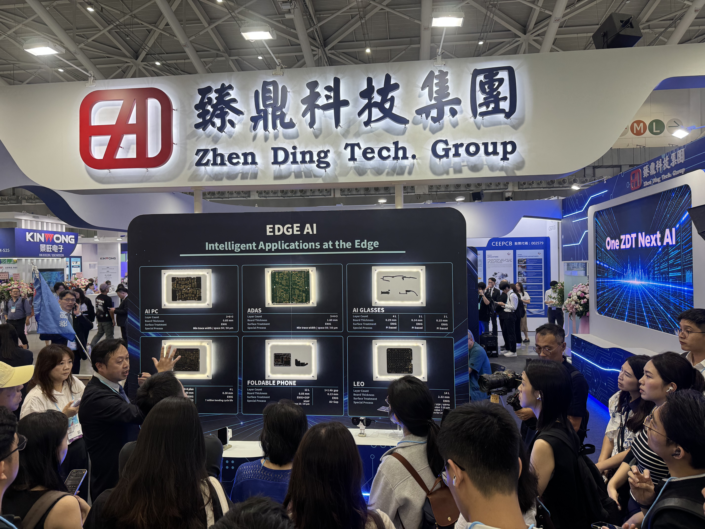
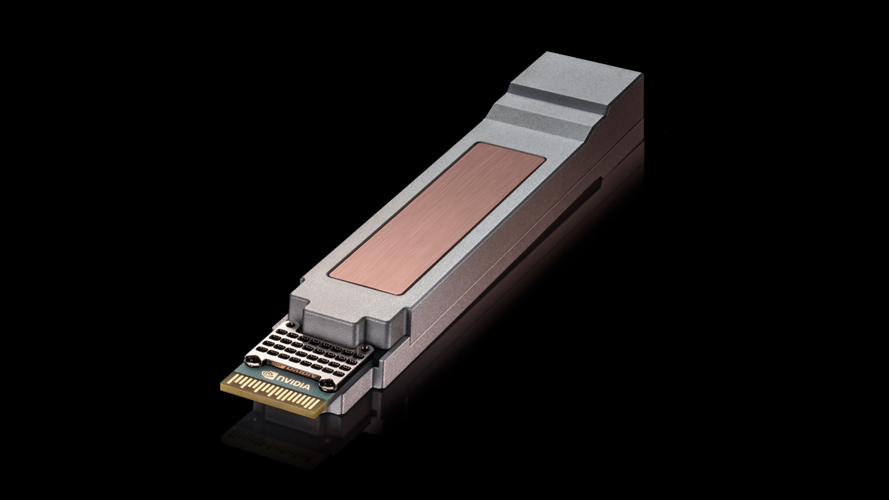
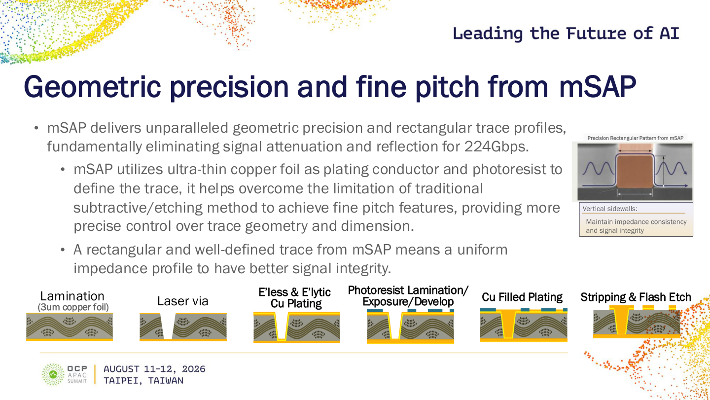
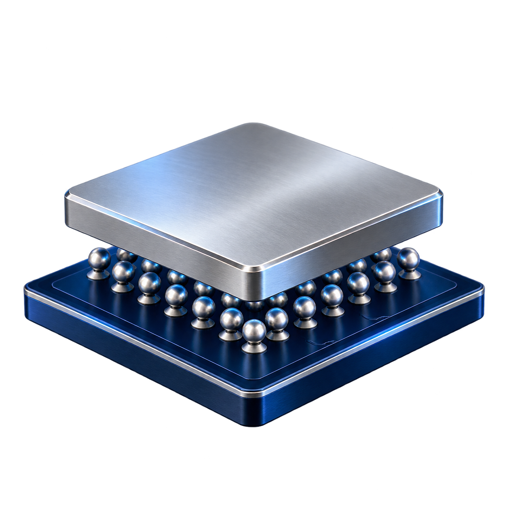

2026/10/23 · 網站原文
2026 TPCA Show上，光收發模組成為PCB產業的重要焦點。看看剛落幕的OCP大會，NVIDIA與Cisco提出的USFP設計，連每條電通道都要推向400G，就能理解這股升級壓力：光收發模組越跑越快，承載訊號的PCB，又得準備什麼能力？

2026 TPCA Show台灣電路板產業國際展覽會 (2026/10/20–2026/10/22)，臻鼎、欣興等PCB大廠對光通訊的積極布局，讓這個題目的熱度相當具體。臻鼎董事長沈慶芳在2026/10/20展會受訪時，談到高速光通訊拉貨強勁，預期2027年光模組相關業務將倍數成長；集團也積極擴充高階產品產能，加速光收發模組應用布局。欣興則利用既有工廠改造，增加光收發模組相關產能，先前法說預計在4Q26陸續開出。
從臻鼎談成長與擴產，到欣興把既有工廠轉向新需求，這些龍頭大廠的投入，已經落到製程升級與產能建置。各家廠商公開的mSAP規格、投資與產能規劃，整理於下方的Exhibit 2。
我就問，為什麼到了1.6T，光收發模組的PCB製程，也得要用mSAP？
鵬鼎2026上半年光模組收入已超過2025全年2.28億元；新專案規劃年產65.56萬平方公尺，涵蓋AI伺服器與高速光模組。臻鼎光模組收入目標成倍成長，客戶已預訂2027年產能。
若擴產順利，產能有望對應上述規模；規劃投入新台幣80–100億元，在重慶、蘆竹及大園三地擴產。
透過既有工廠調整因應需求；目前未取得可獨立拆出的光模組mSAP投資額或產能面積。
光模組mSAP專案總投資約人民幣20.03億元，使用珠海既有廠房空間建置。
2026/06底3條、8月4條，年底規劃5條；800G／1.6T光模組板已批量交付。
在2026/10/15於美國矽谷聖荷西落幕的OCP年度盛會Global Summit上，NVIDIA與Cisco共同提出USFP設計，單模組容量達6.4T，並可進一步擴展至12.8T。從PCB展上大廠積極布局，到資料中心業者推進下一代介面，光收發模組的升級正在兩端同時展開。
USFP的6.4T容量，由16條400G電通道組成；擴展至32條時，容量便達到12.8T。值得注意的是，每一條電通道就要傳輸400G，模組內承載電訊號的線路，也得跟上這個速度。這讓PCB需要面對的高速傳輸要求更加具體。
Arista在2026年3月公布的XPO，採用64條200G電通道，單模組容量達12.8T。近期公告的一些高速互連介面與模組規格，整理在下方的Exhibit 4，方便一起比較電通道速率、總速率與發展階段。

16 × 400G＝6.4T → 32 × 400G＝12.8T
64 × 200G＝12.8T
8 × 200G＝1.6T
16 × 100G＝1.6T → 16 × 200G＝3.2T
800G光收發模組仍是HDI與mSAP並存，比重大約各半；到了1.6T以上，則全面轉向mSAP。為什麼速度提高，連PCB的製程也要換？欣興在研討會上的線路圖，把原因說得很具體。
欣興在2026年8月舉行的OCP APAC Summit上，透過製程與線路截面圖，說明mSAP的細線與幾何控制能力。Exhibit 5就是這張原圖：下方是製程流程，右上方則是接近矩形的銅線截面，特別標出垂直側壁與阻抗一致性的關係。

如果把銅線的任務想成「有通就好」，到了高速傳輸，連側面長什麼樣，都得仔細管。傳統減成法是把不需要的銅蝕刻掉，但蝕刻過程也會向側面侵蝕，於是線路設計圖畫得方方正正，蝕刻出來卻是在哈囉：截面可能呈梯形，線寬也會偏離設計值。欣興的流程圖則從3微米薄銅箔出發，經過雷射孔、鍍銅、光阻成像、填銅，最後去除光阻及多餘的薄銅。透過光阻定義線路，再以電鍍形成銅線，能更精準地控制線路形狀與尺寸。
再看右上方的截面圖，就能看到mSAP如何讓銅線更接近設計的樣子。銅線兩側接近垂直，截面接近矩形，邊緣輪廓也更明確。相較於傳統蝕刻容易產生的梯形與尺寸偏差，mSAP讓線寬、銅厚與邊緣更接近設計值，沿線的阻抗也更容易維持一致。高速訊號經過這些線路時，阻抗變化越小，就越有助於減少反射。
欣興在演講中指出，這種輪廓明確、較均勻的線路，有助於降低訊號衰減與反射，尤其是224Gbps或以上的高速電訊號傳輸。mSAP的價值因此不只在於做得細，也在於讓線路形狀與尺寸更一致，把高速訊號要經過的路徑做得更可控。
為什麼高速光收發模組會用到覆晶（flip chip）？環旭電子USI在介紹1.6T光模組設計與製造的技術文章中寫道：覆晶透過高密度、短距離的互連整合數位訊號處理器（DSP）與光子積體電路（PIC），有助於降低寄生效應，改善高速訊號表現。
晶片熱了會脹大，板子熱了也會脹大。問題是，不是你想脹多大，就能脹多大，還得顧一下跟你接在一起的那位。CTE就是熱膨脹係數；採用覆晶後，晶片與下方基板的膨脹差異可能拉扯細小接點，採用合適的低CTE材料，有助於降低膨脹不匹配與接點應力。
回頭看前面的投入，就比較容易理解板廠正在增加什麼能力。1.6T產品已經把mSAP帶進公開製程路線，400G電通道的規劃則繼續提高訊號傳輸與整合密度的要求。
mSAP讓細線與線路形狀更可控；當高速互連進一步採用覆晶，材料的熱膨脹差異，也成為接點可靠度必須考慮的問題。
光收發模組變快，線路就得在更小的空間裡維持電性，接點也得在溫度變化下維持可靠。一路從光模組談到PCB製程、材料與封裝，最後才發現，光通訊的下一步，有一部分得先把銅做好。
mSAP：讓細線與線路形狀更可控
提高線寬、銅厚與截面的一致性，讓高速訊號路徑更接近設計要求

低CTE：覆晶之後，也要顧接點可靠度
採用合適的低CTE材料，有助於降低膨脹不匹配與接點應力